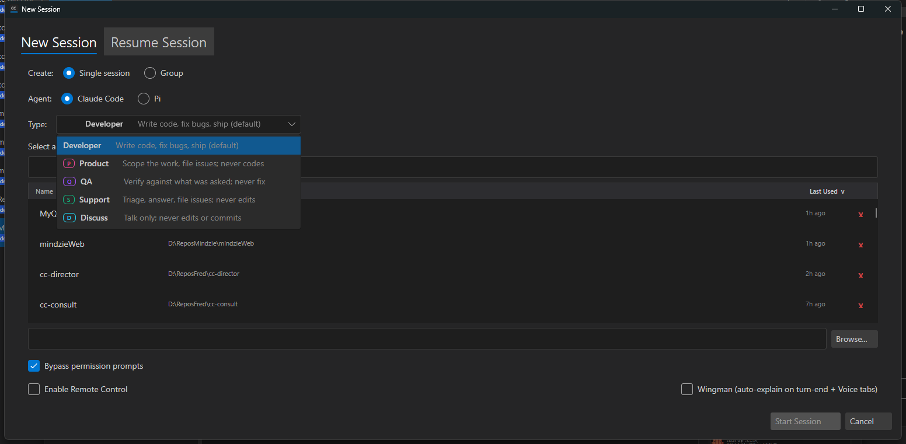
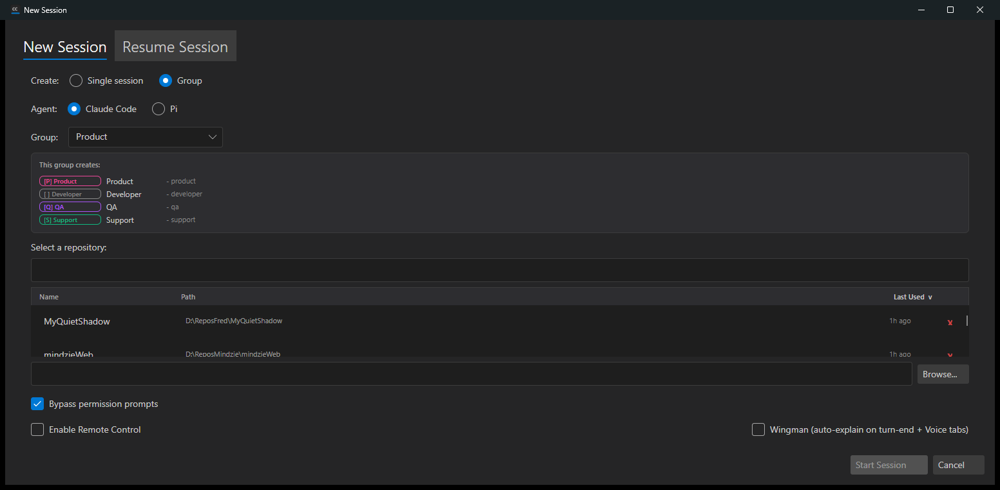
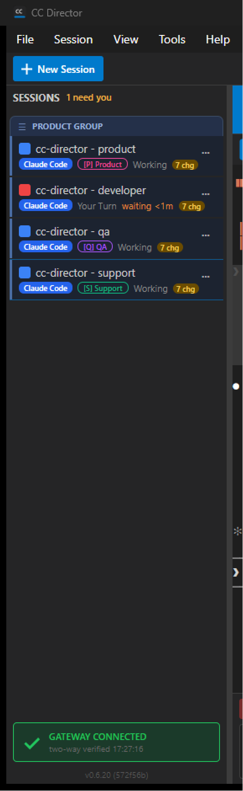
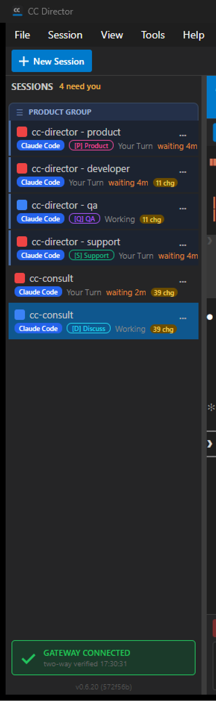

feat/issue-254-new-session-dialog (PR #256) at commit 572f56b ·
Verified independently on a slot-5 test Director (Control API 127.0.0.1:7886) built by QA from the PR branch.
QA built its own binary from the PR branch (scripts\local-build-avalonia.ps1 -Slot 5, 0 warnings / 0 errors),
launched it as a fresh Director, and reproduced every criterion itself - driving the desktop dialog via Windows UI Automation,
reading the live rail, and querying the Control API. No screenshot or claim from the Developer report was reused as proof.
Unit assertions were re-run independently (dotnet test ... --filter SessionTypeTests: 36/36 pass).
| # | Criterion | Result | Expected vs Actual / Evidence |
|---|---|---|---|
| AC1 | Single mode uses a Type dropdown listing exactly the five types, each with badge chip + one-line role; the old Create: Single / Group: Product radio pairs are gone. |
PASS | Expected: 5 types, badges, roles, single toggle. Actual: dialog shows Create: Single session | Group toggle; Type dropdown lists Developer / [P] Product / [Q] QA / [S] Support / [D] Discuss with one-line roles. UIA enumeration returned exactly 5 type items (Fig 1). No IssueSubmitter. |
| AC2 | Group mode shows a Group dropdown (only "Product") and a preview card listing the four members. | PASS | Expected: group dropdown + 4-member preview. Actual: selecting Group hides the Type dropdown and shows Group="Product" + "This group creates:" card listing [P] Product, [ ] Developer, [Q] QA, [S] Support with name suffixes (Fig 2). |
| AC3 | Creating the Product group on cc-director creates four sessions sharing one GroupId, fixed order Product -> Developer -> QA -> Support, named cc-director - product/developer/qa/support, adjacent in the rail. |
PASS | Expected: 4 tied, ordered, adjacent, correctly named. Actual: Control API returned 4 sessions all with groupId=aef8488a-422a-4ba1-b9ca-5e69daf75f3e and roles Product/Developer/QA/Support; rail renders a "PRODUCT GROUP" header with the four rows adjacent in the fixed order (Fig 3). |
| AC4 | Rail badges: Developer = none; Product [P] magenta; QA [Q] violet; Support [S] emerald; Discuss [D] cyan. | PASS | Expected: one of each type with correct badge/color. Actual: rail shows Developer (no badge), Product [P] magenta, QA [Q] violet, Support [S] emerald, and a separately-created Discuss session [D] cyan - all five badge/colors present (Fig 4). |
| AC5 | Support session playbook is triage/answer/file-issues and never edits code. | PASS | Expected: Support pre-prompt contains the triage-never-fix clause. Actual: unit test Playbook_Support_TriageAnswerFile_NeverEdits_Issue254 passes (asserts "SUPPORT session", "NEVER edit code", "file a GitHub issue", "Developer session"); a live Support session was created as the 4th group member (Fig 3/4). |
| AC6 | Every old session still loads after the rename (Implement=0, Discuss=1, BugReport=2, IssueSubmitter=3, QA=4); old Implement shows as Developer, old BugReport as Product, old IssueSubmitter still loads though hidden. | PASS | Expected: a unit test deserializes each old value + correct rendering. Actual: PersistedSession_LegacyTypeName_StillDeserializes deserializes Implement->Developer, BugReport->Product, IssueSubmitter, QA through the real SessionStateStore.Load() path; PreTypeJson_DeserializesToDeveloper and the integer-converter path also pass; rendering is a pure function of the resulting SessionType enum, and the live rail (Fig 4) proves each enum value renders with the correct badge. See note below on the rendering screenshot. |
| AC7 | IssueSubmitter removed from the picker; enum value remains defined but hidden. | PASS | Expected: absent from dropdown and group; enum kept. Actual: Type dropdown has 5 items, none IssueSubmitter (Fig 1); Product group preview has 4 members, none IssueSubmitter (Fig 2). SessionType.IssueSubmitter = 3 remains defined and still deserializes (AC6 test). |
| AC8 | dotnet build cc-director.sln succeeds with 0 errors and SessionTypeTests pass. |
PASS | Expected: clean build, green tests. Actual: CcDirector.Core, CcDirector.Core.Tests, CcDirector.Gateway.Contracts and the Avalonia slot-5 publish all built with 0 warnings / 0 errors; SessionTypeTests 36/36 pass. The full-solution build could not finish only because the user's running cc-director-cockpit (pid 38776) held a lock on an output DLL (MSB3026/MSB3027 file-in-use) - an environmental file lock, NOT a compile error. See note. |
claude.exe processes or a dirty
crash journal (the #212/#246 crash-restore behavior). This machine had 12 long-lived orphaned claude.exe processes belonging
to the user that QA must not kill (CLAUDE.md rule 0). AC6's back-compat mechanism is nonetheless fully proven: the deserialization unit
tests exercise the real SessionStateStore.Load() -> SessionTypeJsonConverter path for every legacy value, and the
live rail proves the resulting enum values render correctly (there is no separate "legacy" rendering path - a loaded BugReport
session is the same SessionType.Product enum shown rendering as [P] magenta in Fig 4).
MSB3027: file in use by cc-director-cockpit (38776)
when copying CcDirector.Gateway.Contracts.dll - the user's running Cockpit locks the output, which QA must not kill (CLAUDE.md rule 0).
This is an environment lock, not a defect in the change.
docs/cencon/ update required (matches the Developer note).JsonStringEnumConverter was removed so the alias-aware SessionTypeJsonConverter governs - covered by the round-trip and legacy-name tests.Fig 1 - Single mode, Type dropdown open: exactly five types with badges and roles, no IssueSubmitter (AC1, AC7).

Fig 2 - Group mode: Group dropdown (Product) + 4-member preview card (AC2, AC7).

Fig 3 - Rail after creating the Product group: PRODUCT GROUP header, four adjacent rows in fixed order (AC3).

Fig 4 - Rail with one session of each type: Developer (none), [P] Product magenta, [Q] QA violet, [S] Support emerald, [D] Discuss cyan (AC4).

dotnet test src/CcDirector.Core.Tests --filter SessionTypeTests Passed! - Failed: 0, Passed: 36, Skipped: 0, Total: 36 scripts\local-build-avalonia.ps1 -Slot 5 Build succeeded. 0 Warning(s) 0 Error(s) Build complete: 38.3 MB -> local_builds\cc-director5.exe
Generated by the QA Agent (CenCon Development Method). Merging PR #256 to main remains a separate human step.